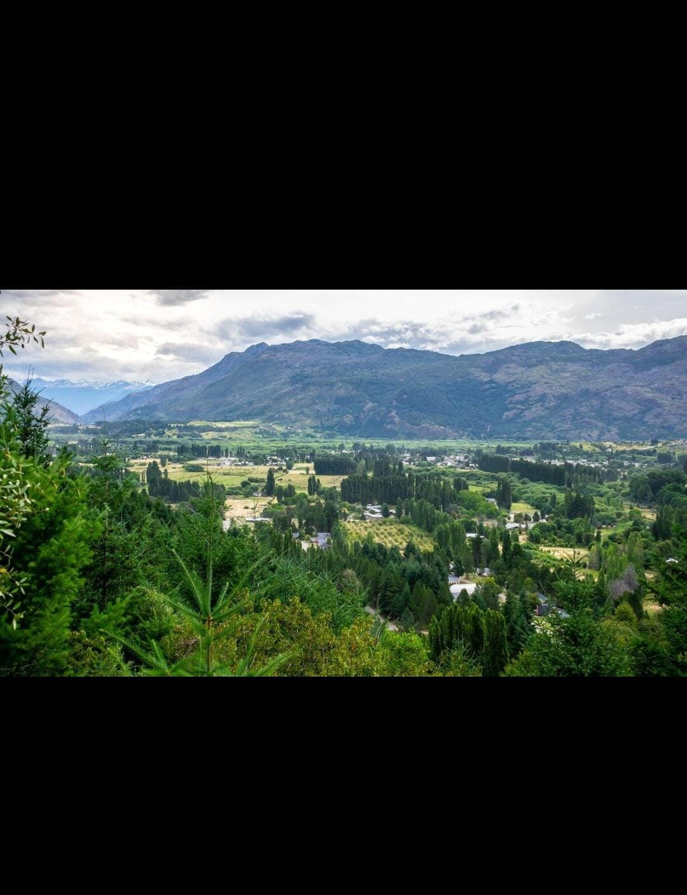
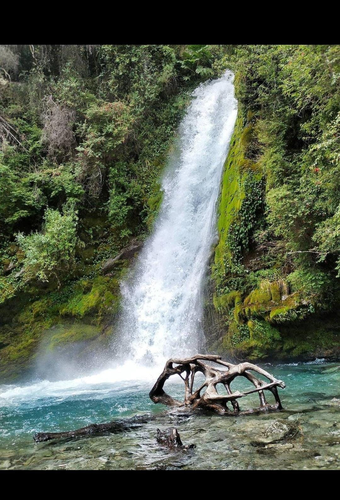
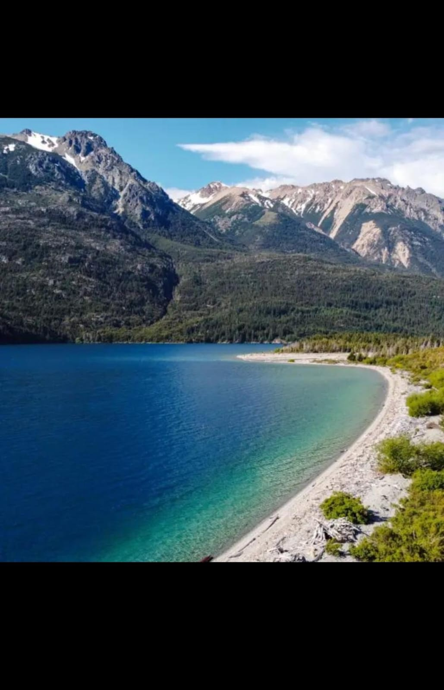
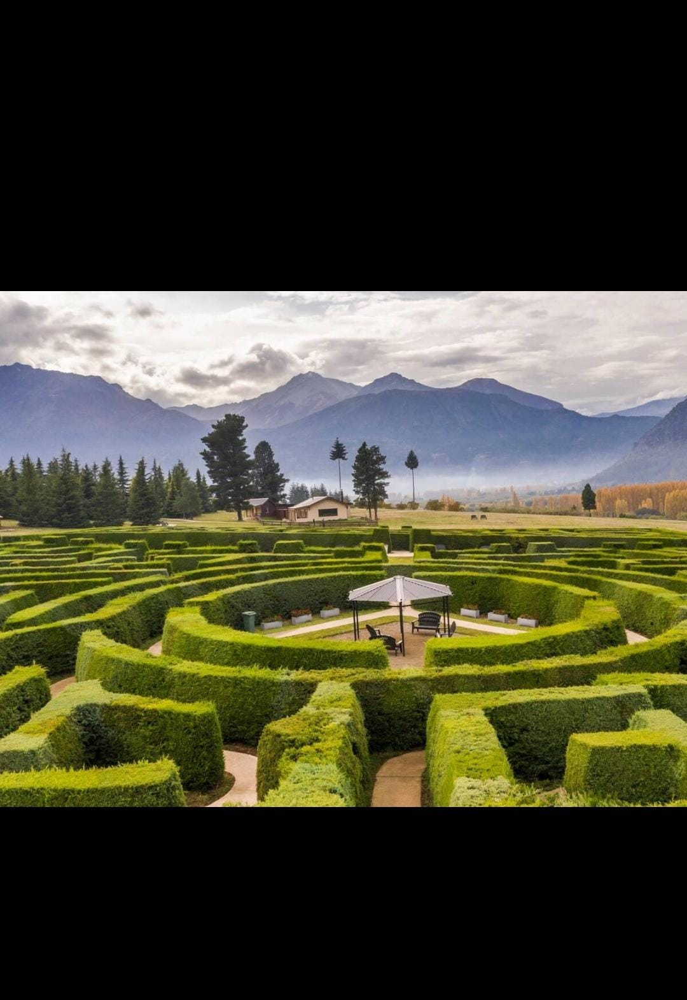
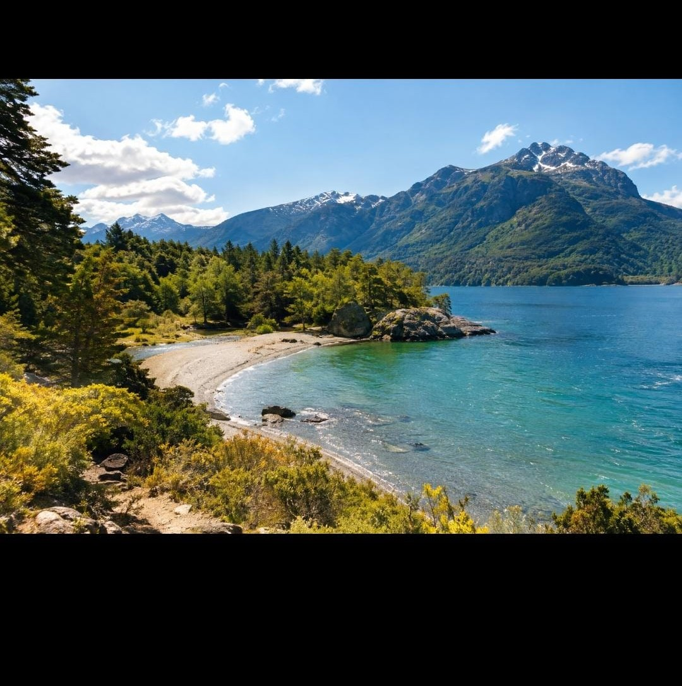
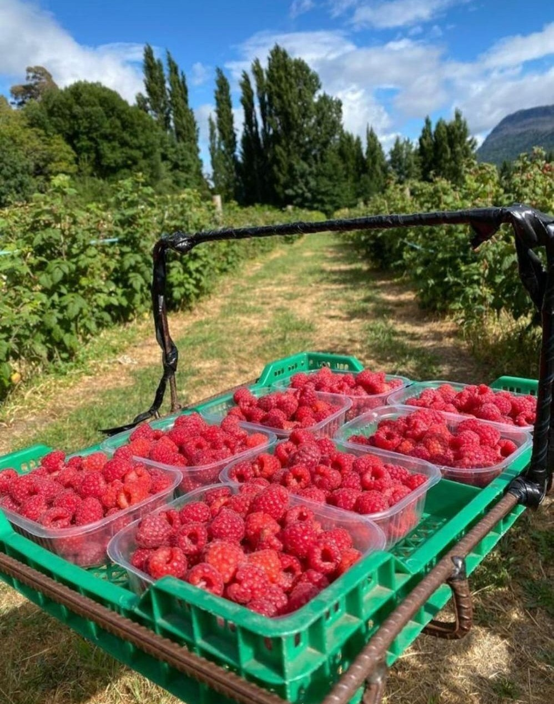

Pueblos originarios
Las comunidades tehuelches y mapuches habitaron la región y forman parte de la historia cultural de la Patagonia.
Montañas, lagos cristalinos y valles que guardan la esencia de la naturaleza patagónica.
Conocé El Hoyo ↓Un rincón de Chubut
El Hoyo es una localidad de la Patagonia andina, ubicada en el departamento Cushamen, al noroeste de Chubut. Sus montañas, bosques y valles crean un paisaje único dentro de la Comarca Andina.
Su microclima favorece el cultivo de frambuesas, frutillas, cerezas y otras frutas finas. La producción regional y el turismo forman parte de su identidad.
Descubrir su historia ↗
Las comunidades tehuelches y mapuches habitaron la región y forman parte de la historia cultural de la Patagonia.
Familias y pobladores comenzaron a establecerse en el valle, desarrollando actividades rurales.
El Hoyo fue fundado oficialmente y avanzó en su organización como localidad.
Su producción frutícola y el trabajo comunitario se convirtieron en símbolos de su identidad.
Paisajes inolvidables
Senderos, aguas transparentes y espacios para descubrir la Patagonia a tu propio ritmo.




Playas, bosques y senderos para disfrutar al aire libre.
Ver ubicación ↗
El Hoyo es reconocido por su producción de fruta fina. Las chacras de la zona ofrecen frambuesas, frutillas, cerezas y grosellas que se utilizan en dulces, mermeladas y productos artesanales.
Esta tradición une la agricultura familiar, la gastronomía y el turismo rural.
SABOR PATAGÓNICOTradiciones regionales, artesanías, encuentros comunitarios y expresiones culturales.
Escuelas, servicios de salud, comercios y emprendimientos que acompañan a la población.
Proteger los bosques, cuidar el agua, reducir residuos y prevenir incendios forestales.
El Hoyo está ubicado en la Comarca Andina del Paralelo 42, sobre la Ruta Nacional 40.
El Bolsón
Aproximadamente 12 km al norte.
San Carlos de Bariloche
Aproximadamente 140 km al norte.
Acceso principal
Ruta Nacional 40.